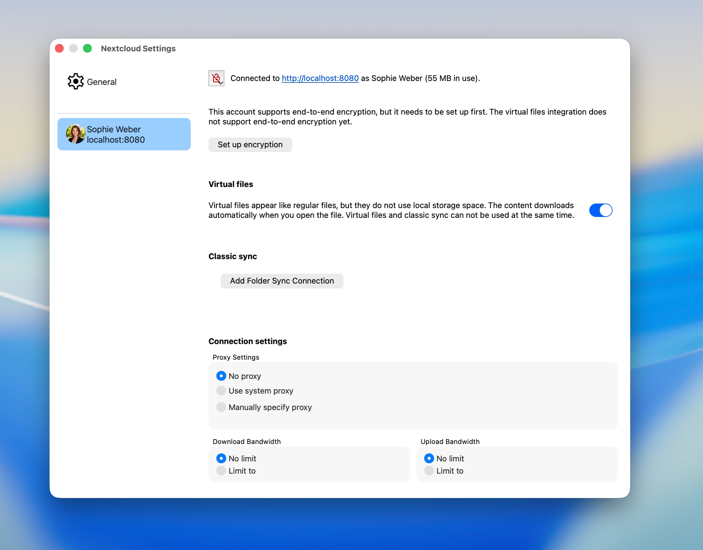
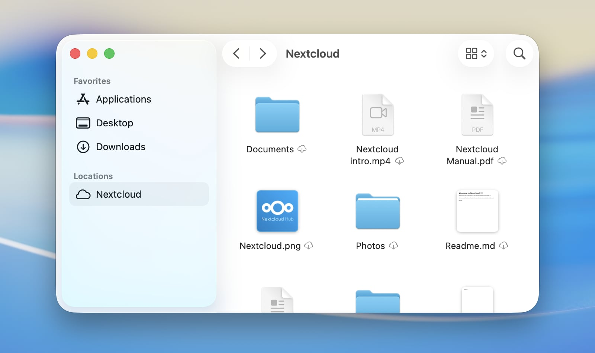

Brug af File Provider på macOS
På macOS kan klienten også integrere Nextcloud-filer problemfrit i macOS som en File Provider-udvidelse. Integrationen er som standard slået til for alle nye Nextcloud-konti.
Understøttede funktioner
Gør filer eller hele mapper tilgængelige offline
Frigør lokal diskplads ved at fjerne lokale kopier uden at slette elementerne
Intelligent og automatisk fjernelse af lokale data
Forhåndsvisning i Finder af filer, der endnu ikke er hentet
Understøttelse af Apples egne formater, f.eks. pakker fra Pages, Numbers eller Keynote
Understøttelse af fillåsning på serveren (hvis den tilsluttede server understøtter det)
Understøttelse af »Åbn lokalt«
Deling med andre brugere
Handlinger fra serveren direkte i Finders genvejsmenu
Automatisk registrering af ændringer på serveren
Opsætning
Indstillingerne for File Provider-udvidelsen kan justeres for hver konto i indstillingsvinduet i Nextclouds skrivebordsklient.


Her kan integrationen med Finder slås til eller fra.
Hvis du slår File Provider-udvidelsen fra, mens der stadig er ændringer, der ikke er synkroniseret, gemmer macOS de ikke-synkroniserede elementer i en mappe, der automatisk vises, når integrationen er slået fra.
Integration med Finder
På macOS vises fjernlager som en Nextcloud-konto som et særskilt sted i Finders indholdsoversigt. Hvor indholdet faktisk ligger på disken, bestemmer macOS.


Bemærk
For at registrere ændringer på serveren hurtigere anbefaler vi, at appen notify_push slås til på din Nextcloud-server. Appen giver skrivebordsklienten besked om ændringer på serveren, så snart de sker, så de hurtigere vises i Finder. Ellers skal klienten spørge serveren med jævne mellemrum, hvilket giver en længere forsinkelse, fra en ændring sker på serveren, til den kan ses lokalt.
Indikatorer for synkroniseringsstatus
Ligesom i klassiske synkroniseringsmapper viser Finder statusindikatorer ved elementerne. I modsætning til de særlige indikatorer i klassiske synkroniseringsmapper er disse standardindikatorer leveret af macOS, så de ser ens ud i alle de skylagringsapps, en bruger måtte have på sit system.
Sky med pil nedad: Elementet og dets underelementer er endnu ikke hentet. De kan hentes, hvis der er netværksforbindelse.
Sky med omrids: Elementet er endnu ikke helt overført i dets aktuelle lokale tilstand.
Gennemstreget sky: Elementet er udelukket fra synkronisering.
Lagkagediagram: Elementet er ved at blive overført eller hentet, og fremskridtet vises.
Udfyldt cirkel med en nål: Elementet er tilgængeligt offline og bliver gemt lokalt.
Intet ikon: Elementet er tilgængeligt offline og opdateret.


Kendte problemer
Konflikt mellem udvidelser i macOS
På grund af tekniske begrænsninger, som Apple har indført i macOS, kan integrationen med Finder for klassiske synkroniseringsmapper ikke køre samtidig med en aktiv File Provider-udvidelse. Det betyder, at ikoner på elementerne og valg i genvejsmenuen ikke er tilgængelige for klassiske synkroniseringsmapper, mens File Provider-udvidelsen er slået til.
Aliasfiler
Når du første gang åbner en aliasfil fra macOS, der ligger i Nextcloud, på en enhed, hvor den endnu ikke er hentet, kan filen åbne som et binært dokument i et tekstprogram i stedet for at gå til sit mål. Det sker, fordi macOS beslutter, hvordan en fil skal åbnes, før den hentes, og aliasfiler har ingen genkendelig filendelse eller oplysninger om filtype på serveren – den eneste måde at genkende dem på er at læse indholdet. Når filen har været åbnet eller hentet én gang, ved Nextcloud Desktop, at det er et alias, og gemmer oplysningen lokalt, så alle senere åbninger virker korrekt. Du undgår helt problemet ved at højreklikke på aliasfilen i Finder og vælge Behold hentet, før du åbner den første gang.
Åbn lokalt
Handlingen Åbn lokalt i Nextclouds webbrugerflade kan ikke åbne filer, der administreres af File Provider-udvidelsen. Den kan kun vise dem i Finder.
Det er en begrænsning i selve macOS, ikke en fejl i klienten. For at beskytte dig lader macOS kun bestemte apps åbne en given fil, og macOS lader ikke en app give sig selv den tilladelse. Den del af klienten, der må administrere disse filer, må ikke starte andre apps, og den del, der kunne starte dit program til redigering, må ikke åbne filen.
Det hjælper ikke at give Fuld adgang til disk, fordi det er en anden del af sikkerhedssystemet i macOS, der står for det.
Fejlfinding
Logning på fejlsøgningsniveau
Logposter på fejlsøgningsniveau for File Provider-udvidelsen er som standard slået fra. Hvis du vil rapportere et problem med File Provider, kan det være nyttigt at slå dem til for at få mere detaljerede oplysninger om, hvad der sker bag kulisserne. Du slår dem til ved at køre denne kommando i Terminal:
defaults write com.nextcloud.desktopclient.FileProviderExt debugLoggingEnabled -bool YES
Ændringen træder i kraft inden for få sekunder; du behøver ikke at genstarte udvidelsen eller din Mac. Det anbefales at gendanne standardværdien ved at slette den udtrykkelige værdi, når du har løst det problem, du undersøgte:
defaults delete com.nextcloud.desktopclient.FileProviderExt debugLoggingEnabled